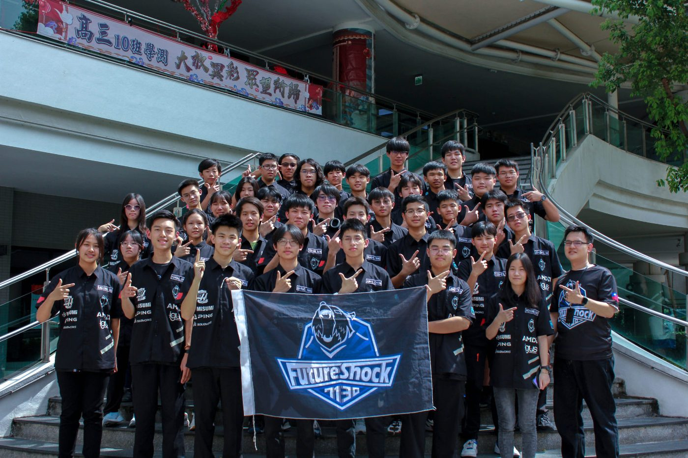
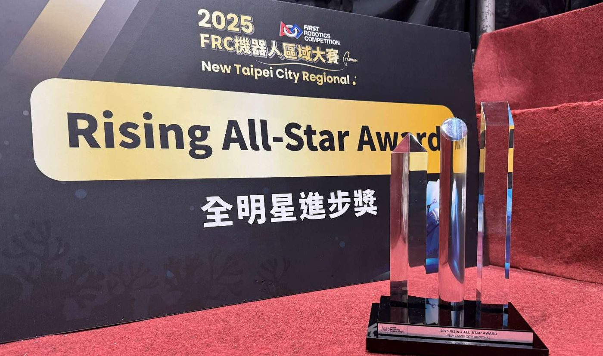
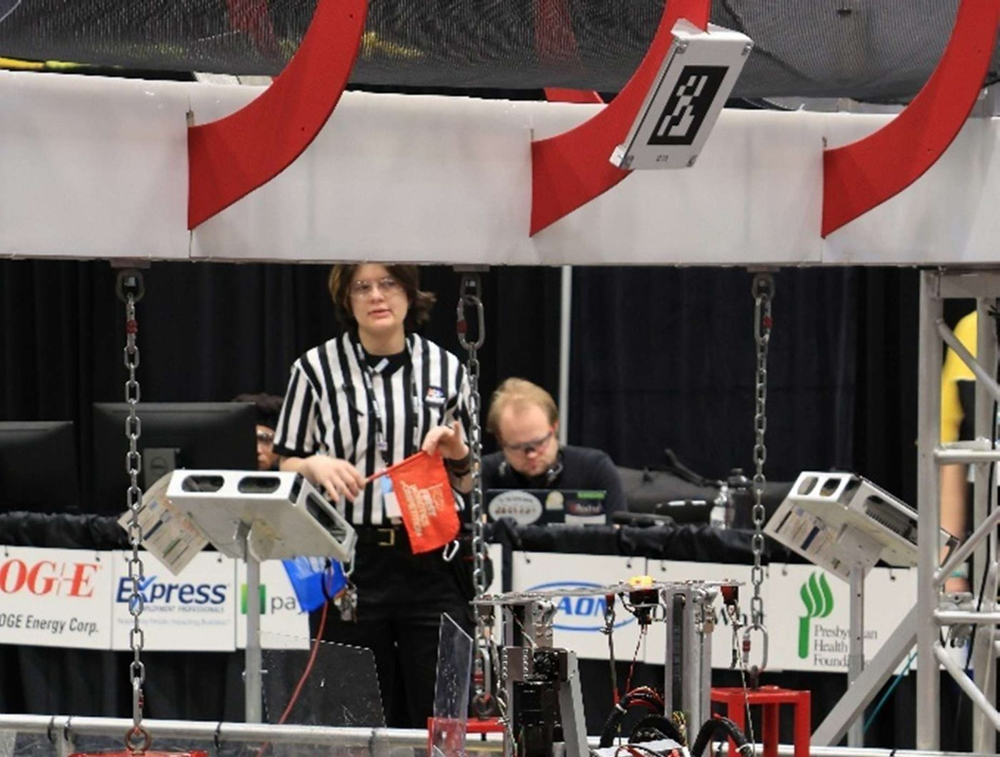
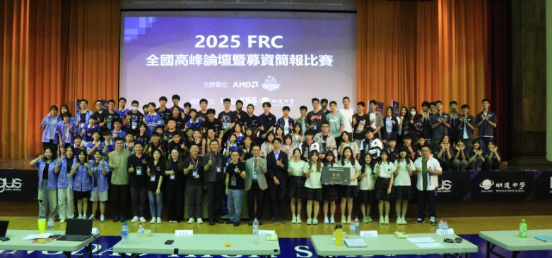
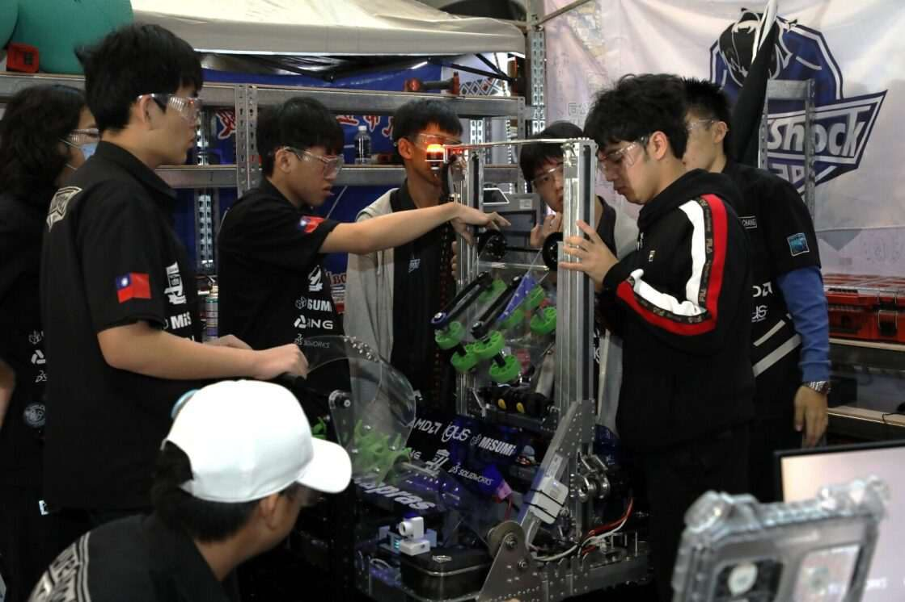
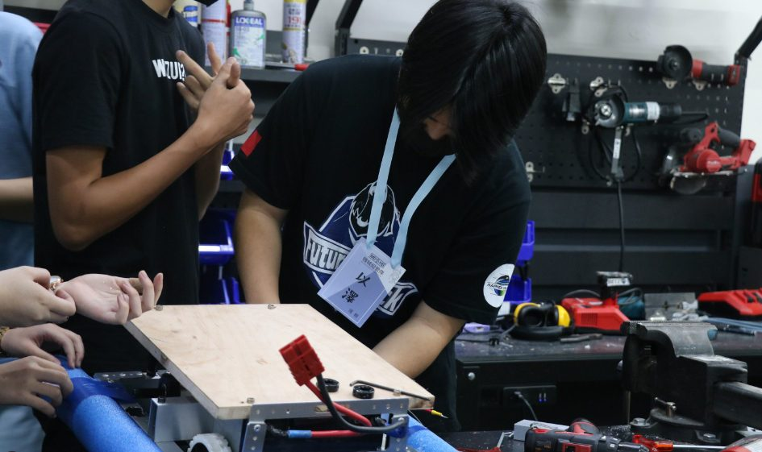
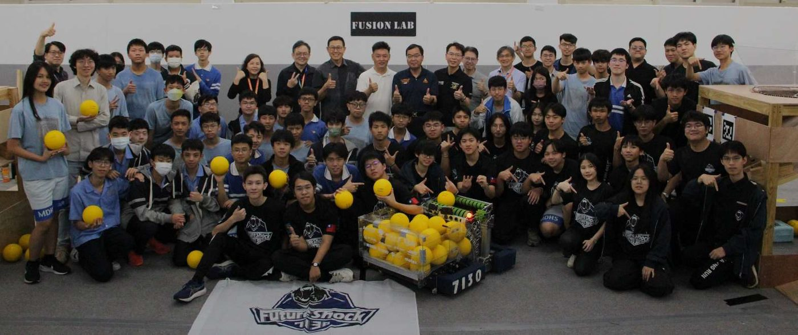
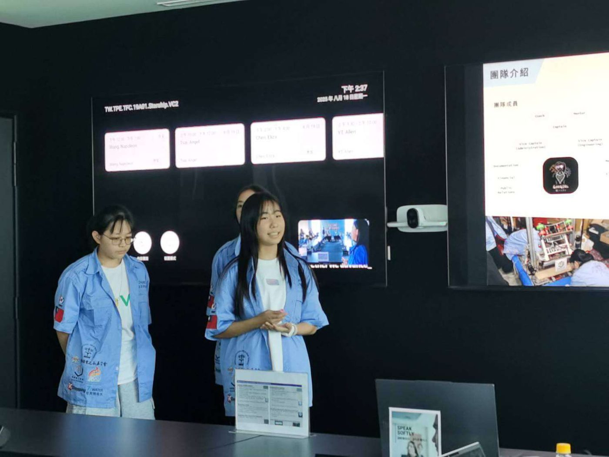
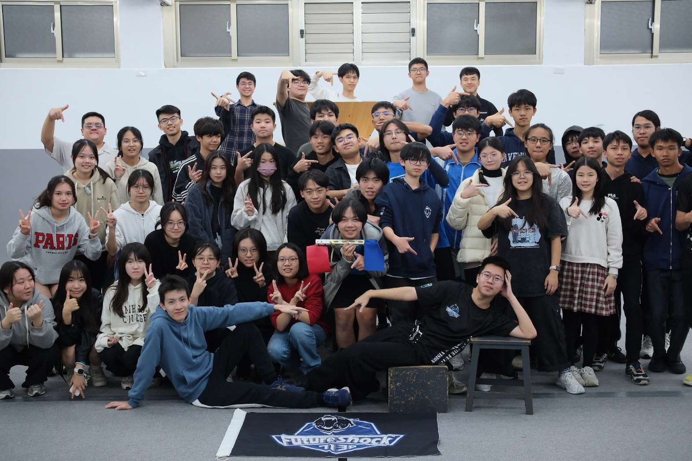
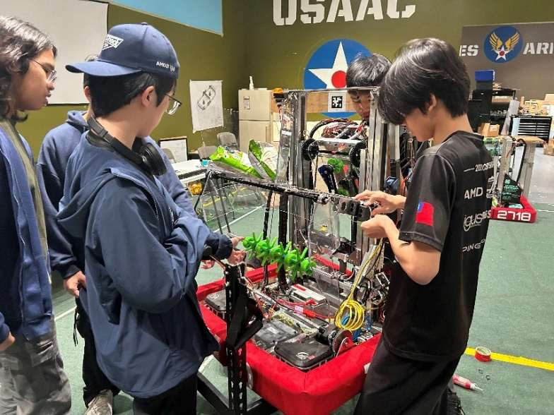

Up to the Future, Expand Your Vision.邁向未來，拓展視野。
Founded in 2018 at Mingdao High School, we are the first and longest-running FRC team in Central Taiwan — a student team, a STEM platform, and a growing ecosystem that other teams build on. 成立於 2018 年、根基於明道中學，我們是中台灣第一支、也是持續運作最久的 FRC 隊伍——既是一支學生隊伍，也是 STEM 教育平台，更是其他隊伍能夠依靠成長的生態系。

More than 50 students from Mingdao High School design, machine, program, and fund a competition robot every season — then take it from Taichung to regionals across Taiwan and the United States. 每個賽季，五十多位明道中學的學生親手設計、加工、編寫程式並籌措資金，打造一台競賽機器人——再從台中出發，征戰台灣與美國各地的區域賽。
Off-season, we run camps for kids, found rookie teams, and bring industry into the classroom. 非賽季時，我們為孩子辦營隊、協助創立新隊伍，並把產業帶進校園。
In 2025 the comeback was real: the Rising All-Star Award at the New Taipei City Regional, the Excellence in Engineering Award at the Oklahoma Regional, and the AMD Impact & Inspiration Award at the Taiwan Playoff. 2025 年我們強勢回歸：新北區域賽 Rising All-Star 獎、奧克拉荷馬區域賽卓越工程獎，以及台灣季後賽 AMD Impact & Inspiration 獎。

See our measurable impact, our bear-tier sponsorship program, and the partners — AMD, MISUMI, igus, Phrozen, Gene Haas Foundation — who already invest in us. 了解我們可量化的社會影響、以熊為主題的贊助方案，以及已投資我們的夥伴——AMD、MISUMI、igus、Phrozen、Gene Haas 基金會等。
Sponsorship tiers →贊助方案 →Students and rookies: discover what FRC is, how our Mechanical, Programming, and Administrative teams train, and how to become a member. 學生與新手：認識什麼是 FRC、我們的機構、程式與行政團隊如何培訓，以及如何成為一員。
How to join →加入方式 →Future Help offers rookie teams mentorship, field access, hardware, and fundraising guidance. We also host the Taiwan FRC Summit and open workshops. Future Help 計畫為新隊伍提供技術指導、場地、硬體與募資協助。我們也主辦台灣 FRC 高峰會與公開工作坊。
Future Help & ecosystem →Future Help 與生態系 →Learn why we exist, how the team is organized and mentored, and how FRC builds engineering skill, teamwork, and confidence beyond the classroom. 了解我們成立的初衷、隊伍的組織與師資，以及 FRC 如何在課堂之外培養孩子的工程能力、團隊合作與自信。
About the team →認識隊伍 →"When students truly stand at the threshold of higher education and future choices, have they seen a world large enough to possess the judgment necessary to choose?" 「當學生真正站在升學與未來選擇的門檻前，他們是否已看過一個足夠大的世界，擁有做出選擇所需的判斷力？」
Most students build their image of the future from textbooks, test scores, and fragmented information. The shock of realizing "I am not ready to understand the future" is what we call Future Shock — and it's the problem we exist to solve. Through robotics, industry exposure, and community building, we give students the vision and hands-on experience to navigate and shape their own future. 多數學生對未來的想像來自課本、考試成績與零碎的資訊。當他們驚覺「我其實還沒準備好理解未來」——這份衝擊正是我們所說的 Future Shock（未來衝擊），也是我們存在的理由。透過機器人競賽、產業探索與社群經營，我們讓學生獲得足以掌握並塑造自己未來的視野與實作經驗。

REBUILT season: from kickoff strategy and prototypes to Alpha, Beta, and the Final Bot. REBUILT 賽季：從開賽策略、原型到 Alpha、Beta 與最終機器人。

Rising All-Star, Excellence in Engineering, AMD Impact & Inspiration Award, and more. Rising All-Star、卓越工程獎、AMD Impact & Inspiration 獎等。

Nine teams, ~100 participants, co-organized with AMD, NTNU, and NCU. 九支隊伍、近百人參與，與 AMD、台師大、中央大學共同主辦。





